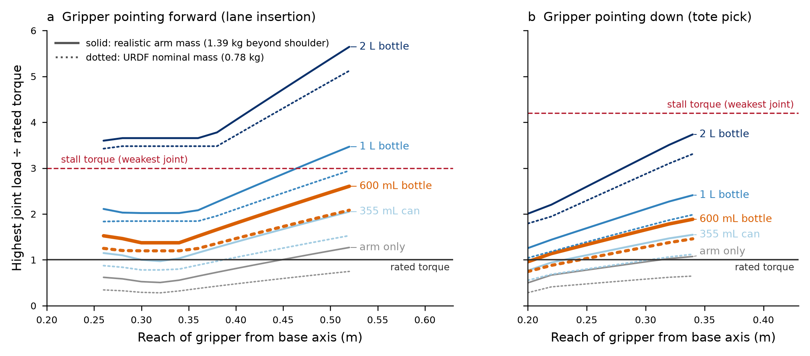
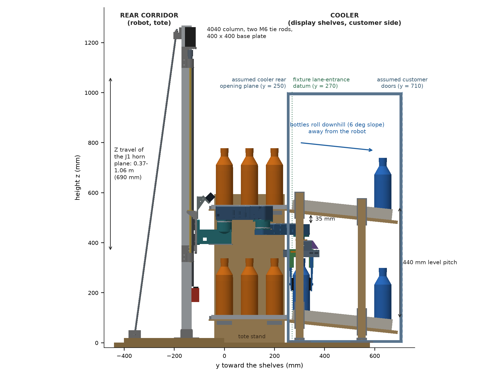
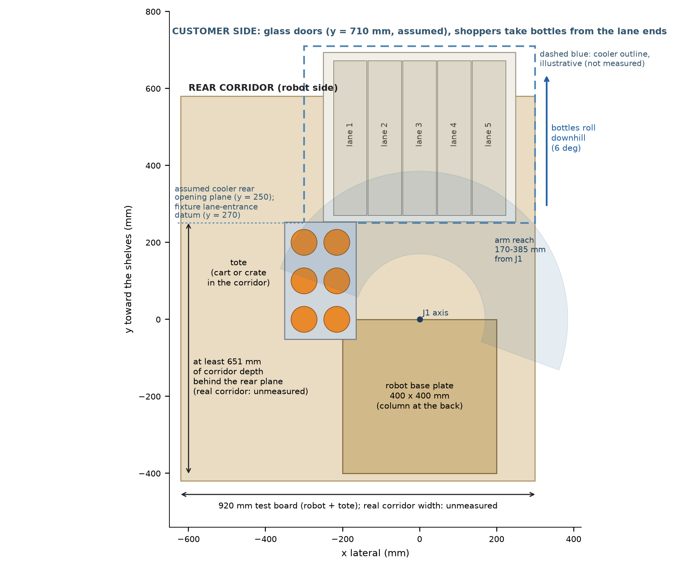
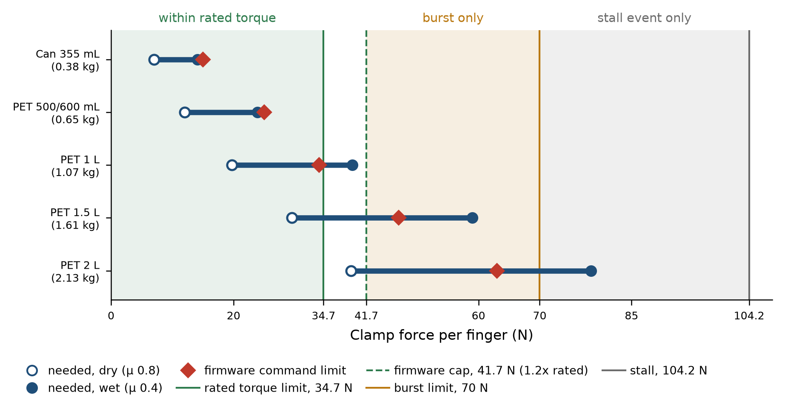
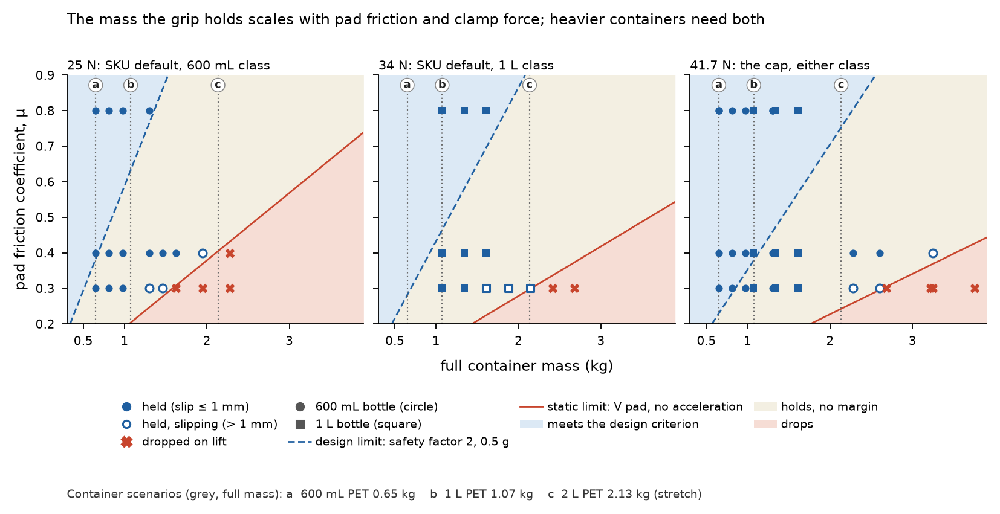
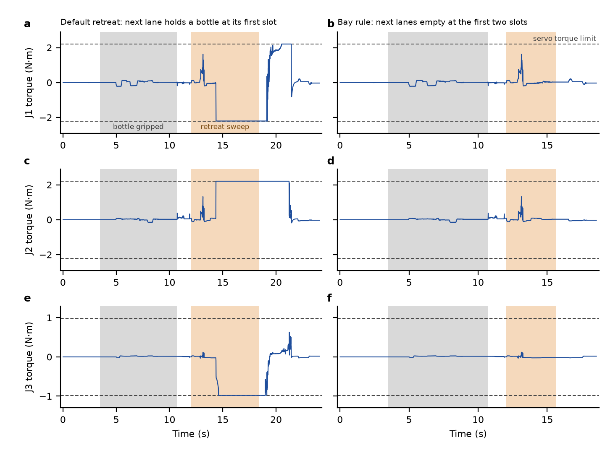
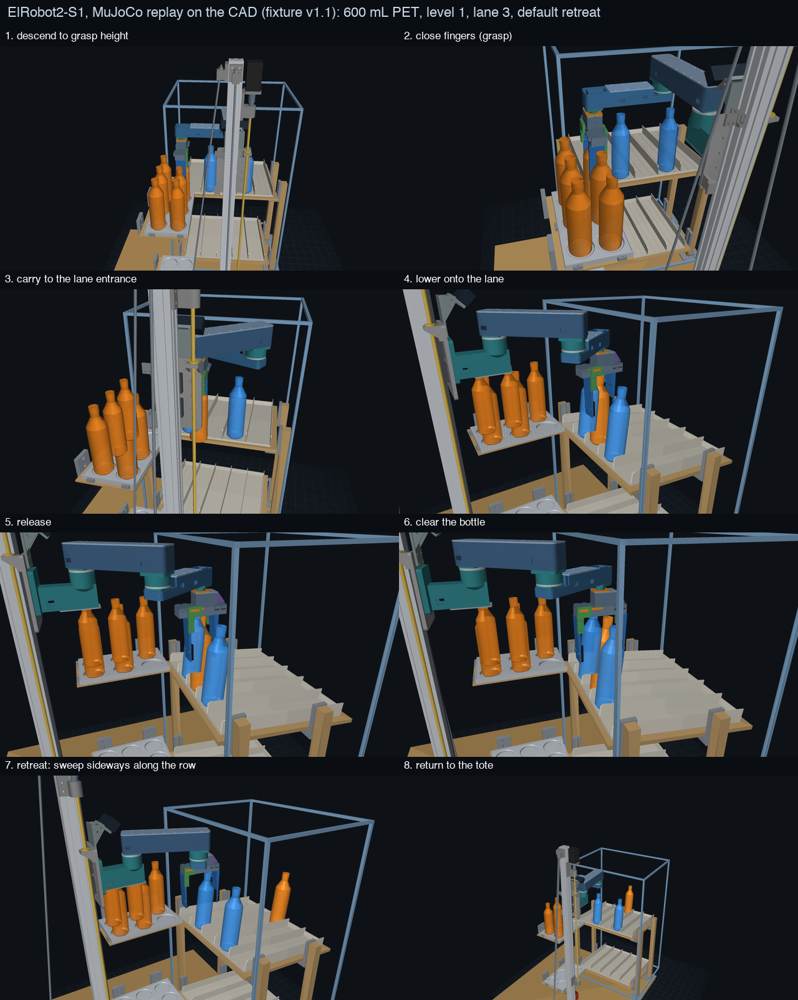
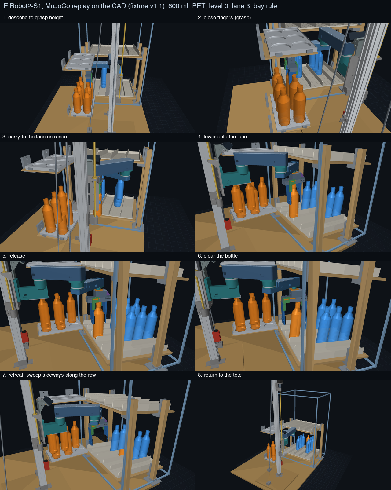
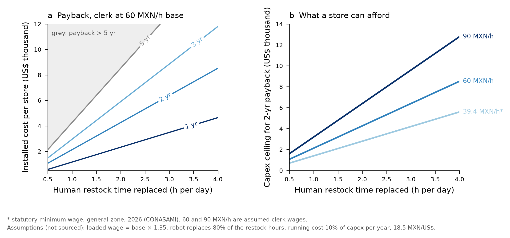

ElRobot2-S1: a Z-lift SCARA that restocks cans and PET bottles through the rear of a cooler
Design report for package v1.1 with the S2 addendum, 2026-10-02. Everything here is design, simulation and desk research: nothing has been printed, built or measured. Numbers are tagged (CAD) boolean checks on the real meshes, (sim) MuJoCo, (calc) hand calculation, (FE) self-written voxel finite elements, (desk) public sources or inference from them, or ASSUMED.
Addendum from the second review round (two questions from a colleague). Section 3.6 adds the payload-mass analysis (liquid density, grip limits, 70 further simulation runs), Section 8 the rack data from public catalogues, and Section 10.1 a plan for a short physical demonstration. Two findings: the 1 L bottle must be clamped at the 41.7 N cap when wet, and the shelf pitch implied by vendor data is below what the v1 stack needs for a 600 mL bottle.
Addendum from the third review round (2026-10-02). The user removed glass and returnable containers from the plan and stated that a store visit, a scale with real containers and a tilt-friction test are not available for now. The unknowns those three items were meant to settle were therefore researched from public sources (Section 8; 28 graded evidence rows). Result: standard racks put the shelves 0.287-0.381 m apart (an inference from manufacturers' shelf counts), and at that pitch the v1 gripper stack, which stands 140 mm above the object, cannot enter the shelf tunnel over a 600 mL or larger PET bottle. The recommended next design is S2: an offset wrist carrying a neck-jaw for PET bottles and a flat clamp for cans (Section 8.4). S2 exists only as a brief; it has no CAD, no simulation and no test. Sections 0, 1, 3.6, 4.3, 7.2, 7.3, 8, 10.1, 11, 12 and 13 were rewritten or extended; Section 3.6 no longer discusses glass.
0. Result in brief
- Design. ElRobot2-S1 is a Z-lift SCARA on a 4040 V-slot column. Two 200 mm links with vertical joint axes (J1 and J2 STS3095, J3 wrist and the gripper STS3215), a top-down rack-and-pinion gripper with 140 mm fingers and TPU pads, and a carriage that travels 0.37-1.06 m. It is built from hobby servos, a NEMA17 with a 24 V brake and PETG parts that print on the Bambu X2D. The top-down gripper is the v1 hand; Section 8.4 proposes its replacement for PET bottles.
- It replaces the AM-ARM200 as the production body. The stock AM-ARM200 loads its most-stressed joint at 0.95-2.6 times rated torque with a 600 mL bottle (calc, Section 2); with vertical axes the S1 joints carry no gravity torque. The AM-ARM200 stays useful for Stage 0 demos and teleoperation data (Section 10).
- Scope that was checked. Cans, 500 mL and 600 mL PET on two shelf levels; the 1 L at level 1 only (with caveats on lane width and wet friction); 1.5 L and 2 L are stretch (they need 47-63 N of clamp against a 41.7 N cap). Glass and returnable containers are out of the plan (user decision, 2026-10-02).
- Simulation on the final fixture (sim, v1.1): 45 of 45 accepted picks succeed dry and 45 of 45 wet; 600 mL Monte Carlo 60/60 at level 0 and 60/60 at level 1; loaded joint torques at most 0.45 N*m on J1 (rated 2.206). 5 of 50 matrix entries are impossible, all of them the 1 L at level 0.
- One open behaviour problem. After release the open gripper touches the neighbouring lane's first bottle in 29 of 45 default retreats. A feeding rule (the bay rule) removes it: 45 of 45 retreats contact-free, 19.9 s per bottle, at the cost of capacity (21 of 25 slots). The open gripper still drags the released bottle sideways by 7.3 mm on average (14.5 mm at most) until it meets a divider. Fully populated lanes are impossible with this gripper at the 90 mm pitch.
- Independent checks found real errors (65-row review log): gear stress 3.14 times understated, clamp force 2 times overstated, lead-screw whirl formula wrong by about 10 times (twice), a 2040 column that leans 9.3 mm, a camera that overlapped the L1 link, headroom measured at the wrong datum, and level-0 and tote-cell limits that the first fixture hid. All are corrected or listed as open.
- What is not known yet. Servo dimensions are inferred from AM-ARM200 files; friction is assumed (every published value for printed TPU is dry, and nothing was found for wet PET); the printed arm depends on a bonded cover (FE: 17-21 times stiffer closed than open); brake and detent values are assumed; the real cooler is unmeasured. Desk research (Section 8) puts the shelf pitch of standard racks at 0.287-0.381 m (0.318 m design-driving; an inference from manufacturers' shelf counts) and the lane glides at 75 mm, against the 0.41-0.43 m that the v1 stack needs for a 600 mL bottle and the 90 mm lanes of the fixture. The consequence is item 11.
- To see it: interactive viewer, three replay videos and a live MuJoCo package (Section 6). To build it: BOM about US$553 (+-35 %) for what is not on hand, a staged print plan of 1.6 kg for the robot and 6.7 kg for the fixture, and a test plan whose first step is 8 hours of coupon printing (Section 7).
- Business case. At Mexican wage levels a labour-only payback supports an installed cost of roughly US$1,400-8,500 depending on hours replaced (Section 9). It does not support an industrial machine on labour alone.
- Mass and container type (added). Mass is modelled per SKU (density x volume + assumed pack). Drinks of the same volume differ by about 4 % in liquid mass. In 70 added simulation runs a container was held up to 0.996 times the static friction limit and dropped from 1.015 times it, and the design criterion (safety factor 2, 0.5 g) is about 3.1 times stricter than that limit. The 1 L bottle must be clamped at the 41.7 N cap when wet, or held by form closure (Section 3.6). Glass and returnable containers were removed from the plan on 2026-10-02.
- Racks and the S2 decision (added 2026-10-02, desk research). Manufacturers' shelf counts (five, six or seven shelves in a 75-79 in door) imply a shelf pitch of 0.287-0.381 m. With 30 mm of shelf structure, the v1 stack cannot enter a shelf tunnel over a 600 mL or larger PET bottle in any of the five standard configurations, nor over a 500 mL bottle except in the sparsest rack and then only if the structure is thinner than about 26 mm (Figure 9); it serves a 355 mL can down to 0.298 m. The recommended next design, S2, replaces the top-down hand by an offset wrist carrying a neck-jaw with 15 mm of profile above the cap (PET, held by form closure on the support ring) and a flat clamp with 50 mm of profile (cans); a push-in transfer plate is the fallback (Section 8.4). The level-0 half of the fixture and the 90 mm lane plates are on hold. S2 has no CAD, no simulation and no test.
1. Reference system, market context and bottle envelope
Telexistence's TX SCARA is the closest commercial reference: a SCARA arm with cameras that runs on a rail between the stock shelves and the rear of the customer-facing cooler and was introduced at a FamilyMart store in November 2021. Its maker states it restocks about 1,000 beverages a day, hands control to a remote operator on failure, and FamilyMart rolled it out to 300 stores from August 2022 with a reported autonomous restocking success rate above 98 %. The price is undisclosed. A successor, TX Ghost, is in pilot at selected 7-Eleven stores in Tokyo, and Seven-Eleven Japan and Telexistence target humanoid deployment for 2029 across a chain of more than 20,000 stores. The architecture (a SCARA in the store backyard with joint axes and link length chosen for that space) and the reported success rate were re-checked on 2026-10-02 (Section 8.1); the other figures come from the earlier literature pass of this project and were not re-checked for this report.
Design consequences: a fixed arm on a vertical axis behind the cooler is a proven architecture; remote recovery is part of the product (rolled-over bottles are the hard case, so the leader arm stays as a teleoperation fallback); cans and PET bottles up to about 2 L are the working envelope.
Mexico is the target market. OXXO Mexico ended June 2026 with 24,708 stores after adding 253 in the quarter. The statutory minimum wage rose from 278.80 to 315.04 pesos a day on 1 January 2026 (general zone). No OXXO cooler was measured; the fixture in this work is a test rig, not an OXXO replica. Section 8 collects what manufacturers' and resellers' catalogues say about the racks behind 'tipo OXXO' doors.
| SKU | Volume (mL) | Diameter (mm) | Height (mm) | Mass full (kg) | Source quality | v1 scope |
|---|---|---|---|---|---|---|
| 355 mL can | 355 | 66 | 122.7 | 0.38 | measured dimensions (reference sites) | core |
| 355 mL slim can | 355 | 57 | 156 | 0.38 | reference site | core |
| 500 mL PET | 500 | 63.5-68 | 210 | 0.52 | reference sites, brand dependent | core |
| 600 mL PET (Mexico soda) | 600 | 64-71 | 237 | 0.65 | retailer listing | core |
| 1 L PET | 1000 | 76-82 | 290 | 1.07 | ESTIMATE, no source found: measure | level 1 only |
| 1.5 L PET | 1500 | 89 | 311 | 1.61 | reference site | stretch |
| 2 L PET | 2000 | 102-110 | 320 | 2.13 | reference sites (300-330 x 100-120) | stretch |
Full table with 473 mL, 2.5 L and 3 L (outside v1): bottle_sku_envelope.csv.
2. Concept and layout
2.1 Why not the stock AM-ARM200
AM-ARM200 is an Apache-2.0 open arm with six joints plus gripper (three STS3095 and four STS3215), stated at 1 kg and 52 cm reach. Gravity torques from its URDF with forward kinematics and a sagittal inverse-kinematics solve (calc), for a printed-mass estimate and the URDF masses (the 1.27 kg camera link is a placeholder and was excluded):

- A 600 mL bottle loads the most-stressed joint at 1.4-2.6 times rated torque in the forward approach (0.26-0.52 m) and 0.95-1.9 times top-down (0.20-0.34 m). Wrist flex (stall only 3 times rated) and shoulder or elbow limit.
- A 2 L bottle exceeds the stall torque of the weakest joint in the forward approach everywhere.
- Rated torque is the continuous limit; stall is short-term. Loads between them heat the servos within a shift.
- Limits: URDF masses are placeholders and the follower has not been weighed. Weighing it is the cheapest way to remove the largest uncertainty.
Conclusion: AM-ARM200 is suitable for Stage 0 (cans and 500-600 mL at short reach, intermittent duty, data collection) and not as the production body. A SCARA with vertical axes removes gravity torque from the rotary joints, so the redesign changes the architecture instead of strengthening the existing arm.
| Option | Gravity torque on rotary joints | New mechanical design | Fit to the task | Decision |
|---|---|---|---|---|
| A. Stock AM-ARM200, fixed base | High | None | Cans and 500-600 mL, no vertical travel | Stage 0 |
| B. AM-ARM200 on a Z lift | Same as A | Z column only | Multi-level access, same joint overload | not designed |
| C. Z-lift SCARA (ElRobot2-S1) | None on J1-J3; bearings carry the cantilever | Turret, links, gripper, Z column | Top-down picks and lane drops, cans to 2 L | chosen |
| D. Cartesian XYZ gantry | None | Three long axes | Simplest kinematics, large and heavy | X axis only, in v2 |
| E. Mobile base with arm (Go2) | Arm dependent | Large | Not needed for a fixed cooler wall | rejected |
2.2 Layout: behind the cooler, loading through the rear
The robot stands in the rear corridor. The fixture's lane-entrance datum is 270 mm in front of the J1 axis (the lane plates start at 253 mm), and the illustrative cooler outline in the figures puts the rear opening plane at 250 mm; where the rear opening of a real cooler sits relative to the lanes is unmeasured. Lanes fall 6 degrees away from the robot, so a bottle released at the rear end can slide the 0.4 m of lane toward the customer side (in the simulation only a lane friction near 0.10 flows without toppling). A staging tote (a crate or cart in the corridor) sits beside the robot at the same level. In the 600 mL replays, measured on the CAD poses, the placed bottle spans y = 272-339 mm (22-89 mm past the assumed rear plane) and the open front finger reaches y = 400 mm during the retreat: 130 mm past the lane-entrance datum and 150 mm past the assumed rear plane (1 L: 407 mm).


What the fixture models: the shelf plates and their tilt, lane modules with dividers and end stops, brackets, posts, the tote tray and its ledge. What it does not model, because nothing real was measured: the cooler body (rear wall and door frame, uprights between bays, side panels, front doors), the real shelf pitch, the corridor depth and temperature. The v1 stack needs a 0.44 m level pitch: the L2 cover top is 130 mm above the grasp datum, and the datum is 10 mm above a 237 mm bottle. If the real pitch is smaller, v1 cannot reach in; Section 8 describes the fix.
2.3 One cycle in words
- The Z carriage descends to the grasp height (z_g = floor + max(H + 10 mm, 143 mm); the J1 horn plane is 150 mm above z_g) and J1-J3 place the gripper over a tote pocket.
- The fingers close to D / cos 15 degrees and the bottle is lifted 25 mm clear of the 11 mm tray rim.
- The arm carries it to the lane entrance, lowers it until its base touches the sloped lane floor, and releases.
- The gripper opens to 125 mm, clears forward, sweeps sideways between neighbouring lanes and returns to the tote. Mean cycle 24.3 s with the default retreat, 19.9 s with the bay rule (sim).
3. The design, module by module
Each module was designed by its own track with scripted, parametric CAD (STEP for assemblies, STL in print orientation, build scripts in the artifact store); the lead set the interfaces and audited the integration. Servo dimensions are inferred from AM-ARM200 STL files, so every pocket is a named parameter with adjustable carriers and a coupon.
3.1 Gripper (revision 4): gripper README, hand calculations
| Item | Value |
|---|---|
| Mechanism | One STS3215 drives a pinion (module 1.5, 16 teeth, face 14 mm) between two racks; pad gap 40-125 mm over 42.5 mm per rack (2309 ticks, 202.9 degrees) |
| Fingers | 140 mm, TPU 95A pads, V pads; closing axis along the lane axis so the fingers never sit between lateral neighbours |
| Footprint, mass | 149.5 x 60.3 mm, body zeta -3.8 to 63.0 mm; printed 335.5 g against a 250 g target (over budget, no lightening done) |
| Clamp per finger | 34.7 N at rated torque (0.981 Nm), 41.7 N at the 1.2 x cap (1.177 Nm), 70 N burst, 104.2 N at stall |
| Command limits | can 15 N, PET up to 600 mL 25 N, 1 L 34 N; 1.5 L (47 N) and 2 L (63 N) exceed the cap |
| Margins (calc) | Pinion tooth, pitch loading 2.74 at rated and 1.60 at stall; tip loading 1.52 at rated, 1.27 at the cap, 0.89 at stall (fails): stall is covered only by the torque cap |
| Other margins | Rack tooth 3.32 rated, finger bending 4.32, yoke leg 3.67, tab root bending 2.12, hard stop 10.9 (rated) |
| Gear fit | Minimum flank gap 0.082 mm, contact ratio 1.74: the weakest tolerance in the design (test A3) |

Checks: 18 of 18 parts watertight; a 15-body matrix at gap 70 and a 20-position sweep show 0 mm3 overlap; grasp-fit cylinders from D57 to D110 clear every printed part. The 2D tooth finite-element check (tooth_fem.py) put the generated outline at 1.0-1.1 times the Lewis stress, which is the formula the margins use; it was not re-run at face 14 mm (scaled by 1/b).
3.2 Arm (J1, J2, J3, links): arm README, verification table, arm_assembly.step
| Item | Value |
|---|---|
| Kinematics | L1 = L2 = 200 mm, vertical axes, reach annulus 0.17-0.385 m; J1 -20 to 160 degrees, J2 +-130, J3 +-180; closing axis angle = q1 + q2 + q3 |
| Joints | J1 and J2: STS3095 (rated 2.206, stall 9.316 Nm) in the same cartridge, two 6806-2RS bearings carry the moment; J3: STS3215 on two 6701-2RS (torque limit 1.0 Nm) |
| Printed parts | 22 parts plus a servo coupon: 927 g PETG and TPU, about 28 h (estimate +-30 %) |
| Heights (zeta, mm) | L1 145-201 (cover 198-201), J2 housing 115.4-145, L2 85.3-130, J3 housing top 127.3, J3 interface plane 62.5 |
| Masses | J1 turret 0.555 kg, L1 side 0.627 kg (budget 0.485), L2 side 0.303 kg (budget 0.195), gripper 0.44 kg; J1 tilt moment 12.2 N*m |
| Bearing load | J1 6806 radial 611 N each at 12.2 N*m: 0.22 of an assumed static rating of 2.8 kN |
| Stiffness (calc) | Tip droop 3.6 mm at 0.385 m with 2.4 kg if the L1 cover acts as a bonded lid; 36-44 mm if it does not |
The L1 cover dependence was re-checked independently with a voxel finite-element model (l1_fe2.py, E 1200 MPa, 1.0 and 1.5 mm voxels): closed box torsion 1.16-1.37 mrad per Nm against at least 24 mrad per Nm for the open U (not converged, so a lower bound), i.e. 17-21 times softer without the cover; bending rotation 1.1-1.2 against 1.9-2.3 mrad per N*m. A screws-only joint was not modelled. Bond the cover with a CA or epoxy bead plus all 14 screws and run the hang test D3 before any bottle.
Open: mass over budget (no lightening pass); cable routing at J1, J2, J3 and the column is not designed (windows and grommets only); J3 servo retention relies on TPU shims.
3.3 Z module v0.6.1: Z module README, verification table, zmod_assembly.step
| Item | Value |
|---|---|
| Structure | 4040 V-slot column, 1250 mm, with two M6 tie rods (rear and side) and a 400 x 400 x 18 mm plywood base; ballast 6.6 kg (rear half) to 10.8 kg (centre) under dynamic load |
| Lean at the column top (calc) | 2.45 mm alone, 1.36 mm with rods (rod joint and foot stiffness ASSUMED); a 2040 column leans 9.3 mm and fails |
| Drive | NEMA17 17HS19-2004D-B070 with a 24 V power-off brake, T8x4 (2-start) screw, MGN12H rail 900 mm; TMC2209 driver at 1.4 A rms (UNVERIFIED) |
| Travel and speed | Carriage 0.37-1.06 m (stroke 0.69 m, hard stops 0.364 and 1.066 m); cruise at most 40 mm/s (ramp 15, 25, 40); 0.44 m level change 17.8 s at 25 mm/s, 11.3 s at 40 mm/s; torque margin 3.2 on 24 V, 12 V cannot run 40 mm/s |
| Loads | Moving mass 2.359 kg plus 2.13 kg payload, 44 N, tilt moment 12.2 N*m; carriage plate 0.41-0.43 mm at the nut (voxel FE) |
| Unpowered hold | Brake margin 17.7, thread detent and friction margin 1.77 at mu 0.05 (detent 25 and friction 10 mN*m ASSUMED); the brake is the guaranteed layer |
| Brake transient | 108-172 N on the nut for 1-2 ms at an E-stop against a 5 MPa sustained allowable (6.4-10.2 MPa): open, test C4 |
| Camera | Gemini 2 hinge raised 38 mm in v0.6.1; lowest point 7.3 mm above the L1 cover (v0.6 overlapped L1 at J1 = -20 degrees) |
| Parts | 13 printed parts, 372 g; assembly interference 0.0 mm3 at 12 carriage positions (41 children) |
Electrical (zmod_electrical.md): the 24 V chain is supply, T3.15 A fuse, relay K1 contacts, then driver and brake; the E-stop button only drives the relay coil, so any broken wire or press drops the 24 V rail and the brake locks. The 12 V servo bus (10 A supply recommended) stays alive on purpose so the arm holds its pose. The brake sequence (release, move, ramp to zero, lock, power down) and the Raspberry Pi Pico pin list are in the page; the TMC2209 current and the 80 ms release delay are UNVERIFIED.
3.4 Fixture v1.1: fixture README, interface limits
| Item | Value |
|---|---|
| Levels | Floors at z = 100 and 540 mm (pitch 440 mm); 12 mm shelf plates tilted 6 degrees (4-10 degrees available by shims); the level-1 plate underside at the entrance is 519.7 mm |
| Lanes | Five lanes at 90 mm pitch (87 mm free), 35 mm dividers, 0.4 m long, PTFE or UHMW tape floor; bottle target y = 270 + D/2 + 1.5 mm |
| Tote | Six D75 pockets (2 x 3 grid at x -300 / -215, y 0 / 100 / 200 mm), pocket 8 mm deep, rim 11 mm above the pocket floor, ledge x -370 to -165 mm, three stops |
| Mass | 27 printed parts, no supports needed; 6.69 kg default set, 9.21 kg with every option |
| Optional | 3-lane wide set (125 mm pitch) and D120 tray for 1.5 L and 2 L |
| Frame | Posts 599.6 / 573.4 mm on four feet; a common baseboard of at least 18 mm plywood, 920 x 1000 mm, carries fixture and robot (top face = world z 0) |
3.5 Single table of shared datums
| Datum | Value | Source |
|---|---|---|
| Frame | x lateral, y toward the shelf, z up; J1 axis is world z through (0, 0) | design_params |
| zeta | height above the gripper datum, up positive; z = z_c + (zeta - 150 mm) | arm, gripper |
| Grasp rule | z_g = z_floor + max(H + 10 mm, 143 mm); z_c = z_g + 150 mm | gripper, fixture |
| Gripper body bottom | zeta -3.8 (designed), -4.3 as mounted; bottle top at -10; clearance 5.7 mm | gripper, lead |
| Fingertip, pad band | zeta -140; pad band -137 to -87 | gripper |
| J3 plane | gripper 63.0, arm 62.5 (gripper sits 0.5 mm lower) | lead |
| Link tops | L2 cover 130, L1 cover 201 | arm |
| Lane entrance plane | y = 270 mm; lane plate front edge y = 253 mm | fixture |
| Assumed cooler rear opening plane | y = 250 mm, used only by the illustrative outline and figures | lead |
| Carriage range | z_c 0.37-1.06 m | Z module |
All parameters: design_params.json (v0.4.3).
3.6 Payload mass: what is modelled, what is not (added 2026-10-02)
A colleague asked whether the weight of the liquid is considered and whether it differs between drinks, beer, returnable and glass containers. Mass is modelled per SKU, with one density per SKU, and the SKU table contains only aluminium cans and one-way PET bottles. On 2026-10-02 glass and returnable containers were removed from the plan, so this section covers cans and one-way PET.
Model. Full mass = liquid density x volume + assumed empty pack (design_params.json v0.4.3, skus): 1.00 g/mL for water, 1.04 g/mL for soft drinks, 13-50 g of pack. Published measurements give regular cola 1.042 g/mL and diet cola 0.997 g/mL (University of Washington chemistry demonstration), and a full can of regular cola about 384 g against about 370 g for diet (UCSB physics demonstration). Two drinks of the same volume therefore differ by about 4 % in liquid mass (600 mL: 0.598 to 0.625 kg of liquid). Finished beer has a final gravity of about 1.004-1.012 (The Electric Brewery, Do In The Most), so its liquid is close to water. The Monte Carlo runs vary the mass by +-5 %, which covers this spread. Container material is outside the table by design: only aluminium cans and one-way PET are in scope.
Table 3.6 Full mass and the friction needed to hold it. Required clamp per finger is SF m (g + a) / (2 mu) with SF 2 and a = 0.5 g; the table gives the smallest mu that meets it at the default clamp for the class and at the 41.7 N cap (payload_mass_scenarios.csv).
| Container | Full mass (kg) | Basis | mu needed at the default clamp | mu needed at the 41.7 N cap |
|---|---|---|---|---|
| 355 mL can, regular cola | 0.383 | modelled | 0.38 (15 N) | 0.14 |
| 355 mL can, diet cola | 0.367 | density variant | 0.36 (15 N) | 0.13 |
| 500 mL PET, water | 0.519 | modelled | 0.31 (25 N) | 0.18 |
| 600 mL PET, regular cola | 0.651 | modelled | 0.38 (25 N) | 0.23 |
| 600 mL PET, diet cola | 0.624 | density variant | 0.37 (25 N) | 0.22 |
| 1 L PET, regular cola | 1.074 | modelled; the size is an estimate | 0.46 (34 N) | 0.38 |
| 2 L PET, regular cola | 2.134 | modelled (stretch) | commanded at the cap | 0.75 |
The preform of a 600 mL PET bottle weighs 18.8 g (Remsa); the modelled pack mass of 26 g adds cap and label.
Where mass enters.
- Pad friction is the limit. At the assumed wet friction of 0.4, the 600 mL default clamp (25 N) meets the design criterion with a 5 % margin (23.9 N needed) and the 1 L default (34 N) falls 14 % short (39.5 N needed). The 1 L is therefore commanded at the 41.7 N cap when it is wet (design_params
pet_1000_wet); the tolerance of a PET shell to 41.7 N has not been tested. Desk research (Section 8.1) found only dry friction values for printed TPU 95A, 0.2-1.0 against steel and other surfaces, and none for wet PET, so the value of 0.4 has no literature support. The design value for printed pads is now 0.3, an inference (dry 0.4-0.5 reduced by wetting). At 0.3 a 600 mL bottle needs 32 N, inside the 34.7 N rated clamp, and a 1 L bottle needs 53 N, above the cap (grip_force_needed_by_sku.csv, friction_limit_table.csv). The 1 L is therefore a case for cast polyurethane or silicone pads (target 0.4-0.5, assumed) or for form closure at the neck (Section 8.4). - Simulation (Figure 8, payload_mass_sensitivity.csv): 70 runs of the nominal level-1 cycle (lane 3, three runs in lane 5) with the container mass scaled from 1 to 5 times (600 mL: 0.65 to 3.25 kg; 1 L: 1.07 to 3.75 kg; cans to 0.57 kg), friction 0.3, 0.4 or 0.8 (0.35 and 0.7 for cans), and the clamp at the SKU default or at the cap. 51 runs held with at most 1 mm of slip, 9 held while slipping and 10 dropped on the lift. The static limit 2 F mu / (g cos 15 deg) with the V pad separates them: the heaviest container held was 0.996 times the limit and the lightest one dropped was 1.015 times it. The cycle's vertical accelerations are therefore about 0.02 g or less, far below the 0.5 g in the design criterion. Examples for the 600 mL class: mu 0.3 at 25 N holds 1.46 kg (slip 2.6 mm) and drops at 1.63 kg; mu 0.4 at 25 N holds 1.95 kg and drops at 2.28 kg; mu 0.3 at the cap holds 2.60 kg (slip 7.6 mm) and drops at 3.25 kg. The 1 L at mu 0.3 and 34 N holds 2.14 kg with 18 mm of slip and drops at 2.41 kg.
- The design criterion is about 3.1 times stricter than the static limit (safety factor 2, 1.5 g of load, no V-pad credit). At the cap and mu 0.4 it allows 1.13 kg against a static hold of 3.52 kg. The simulation alone would pass loads that the design should not carry, so the design criterion, not the simulation, sets the SKU scope.
- Joints and Z (lane 3): for runs that held without slipping, the loaded peak torque is 0.22 Nm on J1 and 0.15 Nm on J2 at 0.65 kg, at most 0.30 and 0.22 Nm between 1.1 and 1.7 kg, and 0.38 and 0.30 Nm between 2.2 and 2.8 kg (rated 2.206 Nm). The highest values in the set, 0.66 Nm on J1 and 0.90 N*m on J2 (30 % and 41 % of rated), belong to runs in which the container slipped in the pads. The largest carriage force in the runs is 35 N at 0.65 kg, 49-50 N between 0.7 and 2.2 kg and 55-61 N between 2.2 and 3.4 kg, against the 44 N static value for the 2.13 kg design payload of the Z module; two can runs reached the simulated actuator limit of 80 N (cause not investigated). Payloads above 2.13 kg are outside the Z design.
- Shelf load: the fixture is designed for 25 kg per level (20.3 kg is 25 bottles of 600 mL with a factor of 1.25).
- Nothing on the arm senses weight: the J1-J3 axes are vertical (no gravity torque) and the gripper register reads clamp torque. The mass must come from SKU recognition and a measured table, or from a scale (a load cell under the tote tray is an idea, not a design).

Decisions. v1 covers cans and one-way PET up to 1 L. Glass and returnable containers are out of the plan (user decision, 2026-10-02). container_data_sheet.csv (PET and cans only) and tests A5-A7 remain as optional tools: weigh and measure what is at hand, measure pad friction dry and wet, recompute Table 3.6. The 1.5 L and 2 L bottles stay stretch. A planner must reject any SKU whose required clamp at the measured wet friction exceeds the cap rather than clamp harder.
Not modelled: slosh and partial fills (the bodies are rigid and full), PET shell compliance at high clamp force, condensation beyond the friction number. Scripts: payload_mass_sensitivity_run.py, payload_mass_boundary_run.py.
4. How the design was checked, and what that does not prove
4.1 Independent integration checks (lead, on the real CAD meshes)
| Check | Method | Result |
|---|---|---|
| Printability | Watertightness, positive volume and bed fit of every STL (arm audit, gripper audit); viewer copies byte-identical to the store | 23 arm STLs and 9 gripper part STLs pass |
| Part-to-part overlaps | Boolean intersection volumes (manifold3d) (independent_interference_audit.csv) | Gripper assembly 13 bodies / 78 pairs (one pose, gap 70 mm; the 20-position sweep is the gripper track's own result) and arm 190 pairs: 0 overlaps (touching only by design); pinion-rack gap 0.082 mm |
| Z module assembly | Overlap at 12 carriage positions, 41 children | 0.0 mm3 |
| Arm against the Z module | Sweep over 3 carriage heights, J1 -20 to 160, J2 -130 to 130, 5 J3 angles, then a fine sweep J1 -20 to 40 every 2.5 degrees (assembly_check.py) | v0.6: the camera overlapped L1 (446 and 386 mm3 at J1 = -20) and came within 1.6-1.8 mm at J1 30-40 and 140-150. v0.6.1: 0 overlaps, no gap of 3 mm or less in the operating chain; designed minimum 4.00 mm (J1 pedestal top to camera bracket foot) |
| Arm against the fixture | Headroom by upward search at the place pose, level 0 and 1, all SKUs (assembly_headroom_v1_1_place_pose.csv) | Table 4.2 |
| Simulation replays against the CAD | Every other frame of all six replays posed on the CAD (replay_cad_check.py, results) | Arm and gripper chain: 0 overlaps with fixture, column, camera or brackets in any frame. Pad-to-neighbour gap 0.76-0.78 mm in the default retreat (the simulation counts it as contact). The released bottle overlaps the CAD end stop because the simulated lane is about 12 mm longer than the CAD lane; the viewer stops it at the CAD wall |
| L1 link stiffness | Voxel FE, 1.0 and 1.5 mm | closed box 17-21 times stiffer in torsion than the open U (Section 3.2) |
4.2 Free lift above the place pose, 600 mL, level 0 (the ceiling is the level-1 plate and bracket seats)
| Target | CAD boolean (this work) | MuJoCo, no margin | MuJoCo with the planner's 1.5 mm margin | Needed |
|---|---|---|---|---|
| Lane 1 | 21.6 mm | 21.2 | 19.7 | 13 mm (rim 11 + 2) |
| Lane 3 | 38.5 mm | 38.3 | 36.8 | 13 mm |
| Lane 5 | 39.2 mm | 38.9 | 37.4 | 13 mm |
| Tote cell (-300, 200) | 37.3 mm | 37.7 | 36.2 | 13-14 mm |
| Tote cells (-215, 0), (-215, 200) | 50.6 mm | 51.0 | 49.5 | 13-14 mm |
| Tote cell (-300, 0) | blocked | blocked | blocked | cans only, as the last pick |
| 1 L, any level-0 target | blocked | blocked | blocked | needs a level pitch of at least 461 mm (486 mm in lane 1) |
| Any SKU, level 1 | 90 mm or more (search limit) | no ceiling modelled | - | carriage stroke limits instead |
Two independent methods agree within 0.5 mm. The fixture track's closed-form values (42.7 mm at the lane axis, 25 mm in lane 1) assume a bottle resting flat at the lane centre; for placing, a held vertical bottle touches the sloped floor at its uphill edge, 3.7 mm higher, so those values are 3.7-5 mm optimistic for placing and correct for picking a resting bottle. I first made the same mistake twice in the opposite direction (review log R43, R44).
The margins are thin at level 0: lane 1 has 8.6 mm to spare in the CAD (6.7 mm in the simulation), and the level pitch can drop by about 6 mm at most (the planner fails at 434 mm). Level 1 has no such limit, which is why it is the first test level.
4.3 Errors found, in order of consequence (full log: design_review_log.csv, 65 rows)
| Error | Found by | Effect | State |
|---|---|---|---|
| Lewis tooth stress used circular pitch with the module-form factor | independent auditor | stress understated 3.14 times | fixed (FE 1.0-1.1 times Lewis) |
| Clamp force per finger is etaT/(2 r_p), not etaT/r_p | lead | overstated 2 times; 1.5 L and 2 L moved to stretch | fixed |
| Lead-screw whirl speed formula missing the mode factor (lead), and the same class of error in the Z agent's first version | lead cross-check | limit understated about 10 times; cruise is set by stepper torque instead | fixed |
| 2040 column | Z module track | 9.3 mm lean | 4040 plus tie rods |
| T8x8 screw does not hold when unpowered | lead derivation | carriage could creep | T8x4 plus brake motor; assumptions open |
| Camera overlapped the L1 link | lead boolean sweep | collision at J1 = -20 degrees | fixed in v0.6.1 |
| Level pitch too small for the real stack: 0.30 m, then 0.40 m, then 0.42 m (tilted plates lower the ceiling by 8.3 mm; the CAD boolean found 16 mm of free lift) | lead, fixture track | level 0 unusable or marginal | pitch 0.44 m |
| Tote rim 22 mm above the pocket floor in the CAD, 12 mm in the simulation | lead | bottle foot would hit the rim | rim 11 mm |
| Tote cell (-300, 0) infeasible with the final arm at level 0 | lead boolean check | five usable cells for PET | scope decision |
| Lane targets used the entrance plane, not the bottle centre | fixture track | outer lanes 2.9 mm from the reach limit | fixed |
| Retreat blocked by the neighbour lane's first slot | simulation | default retreat contact-free in only 16/45 | bay rule |
| Lane headroom measured at the wrong datum (twice) | lead self-audit, settled by the simulation | 5.7 mm and 3.7 mm errors | fixed (Table 4.2) |
| Heat-set inserts: 120 needed, 100 ordered | lead BOM check | build stalls | second pack in batch 1 |
| Fixture baseboard did not extend under the robot base | lead | different z = 0 planes | common 920 x 1000 mm baseboard |
| Figures and text put the lane entrance at y = 250 mm; the fixture datum is 270 mm (250 mm is the assumed cooler plane) | automated review of this session | 20 mm labelling error, no check affected | fixed (figures 2a, 2b, Section 2.2) |
| 'Undisturbed' bay-rule retreats: the released bottle is dragged 7.3 mm on average, 14.5 mm at most | automated review of this session, confirmed on sim_results_nominal_bay.csv | wording overstated the result | fixed (Section 5) |
| 1 L default clamp (34 N) is below the design criterion at wet friction 0.4 (39.5 N needed); the 600 mL default has a 5 % margin | lead, from the mass sensitivity (Section 3.6) | a wet 1 L bottle could slip in transport | 1 L commanded at the 41.7 N cap when wet; confirm in test B |
| Design basis taken from Japanese stores; manufacturers' and resellers' data for the racks behind Mexican 'tipo OXXO' doors give a shelf pitch of 0.287-0.381 m (inference), below the 0.41-0.43 m the v1 stack needs for a 600 mL bottle | colleague, then desk research (Section 8) | the v1 gripper stack cannot serve a 600 mL or larger PET bottle in a standard rack | S2 concept (offset wrist, neck-jaw, flat clamp); open until the S2 CAD, simulation and Phase H tests exist |
| Glide lanes in the vendor data are 74.6 mm wide against the fixture's 90 mm | desk research (Section 8.1) | a 600 mL bottle leaves 3.6-5 mm per side against 3.4 mm of servo backlash at full reach | 75 mm lane inserts in the S2 mock-up; open (test H3) |
| Every published friction value for printed TPU is dry; the v1 assumption of 0.4 wet has no support | desk research (Section 3.6) | the 1 L needs 0.38 at the cap, the 600 mL needs 32 N at 0.3 | design value 0.3, cast pads or neck-jaw for the 1 L; open (A5 optional, H2) |
5. Simulation (MuJoCo, fixture v1.1): sim_summary.md, sim_key_numbers.json
Rigid bodies, ideal position servos clipped at rated torque, hand-tuned gains, assumed masses and friction, convex hulls of the final arm CAD, box models of the fixture structures. The whole v1.0 suite was rerun on v1.1 with the same harness, success rules and seeds. It is a design check, not a prediction of hardware success rates. Values in brackets are the fixture v1.0 results.
| Metric | v1.1 (v1.0) |
|---|---|
| Nominal dry, accepted picks | 45/45 (44/44); 5 of 50 matrix entries impossible: 1 L at level 0 in all five lanes (v1.0 also lost 600 mL lane 1) |
| Nominal wet (pad mu 0.4) | 45/45 (44/44) |
| Loaded J1 / J2 torque, nominal and wet | 0.45 / 0.20 Nm (0.45 / 0.18); at most 1.65 / 1.35 Nm over 580 successful runs; none reaches 2.2 |
| Slip in transport, nominal and wet | at most 0.28 mm |
| Monte Carlo 600 mL, 3 mm and 3 degree errors, mu 0.4-0.8, mass +-5 % | level 0: 60/60 (51/60); level 1: 60/60; mixed 59/60; level 0 lane 1: 20/20 |
| Monte Carlo 1 L, level 1 | 52/60 with D75 pockets, 48/60 with D80, 44/60 with D85; failures are divider contacts in the 87 mm lane |
| Lateral pick error sweep, 600 mL | 12/12 up to 10 mm at both levels; 12 mm: 10/12 and 11/12 |
| Retreat, default (slot-0 neighbour) | contact-free 16/45; 28 of 45 runs reach the torque limit on J1 (stall against a bottle) |
| Retreat, bay rule | contact-free 45/45; bottles stay upright and on the plate but are dragged sideways 7.3 mm on average (14.5 mm at most, up to the lane free play); 19.9 s; torque limit reached in 4 of 45 |
| Retreat, fully populated lanes | 0/45 at the 90 mm pitch (pad stall forces up to 1.2 kN in the model) |
| Wide lanes (3 lanes, 125 mm), 600 mL, full neighbours | corridor retreat 7/10; with a deeper back-out 10/10, Monte Carlo 20/20, 17/20 with neighbours scattered by 4 mm: works but not recommended (4.8-6.5 mm clearance per side, 15 slots per level) |
| Lift-over retreat | needs 139 mm of lift: carriage travel 1.080 m (600 mL) and 1.133 m (1 L) against the 1.06 m stroke; impossible at level 0 |
| 1.5 L and 2 L on the wide lanes with a D120 tray | 36/36 at clamp 34.7-104 N; the cap is 41.7 N, and the 2 L passes only a relaxed 15 mm rear-edge rule (18 of 36 fail the original 5 mm) |
| Cycle time | 24.3 s mean (default), 19.9 s (bay rule); Z at 50 mm/s saves 1.2 s |
| Lane flow (fixture only) | only mu 0.10 at 6 degrees flows without toppling (3.4 s); mu 0.05 topples at every slope, mu 0.2 does not flow |

Recommendation carried into the plan: use the bay rule on the five-lane set. Drop a bottle into a lane only while slots 0 and 1 (the first 160 mm) of both neighbouring lanes are empty; at most lanes 1, 3 and 5 can then be full, lanes 2 and 4 hold three bottles each, and the capacity is 21 of 25 slots (arithmetic from the rule). Both retreat types drag the released bottle sideways, so the lane layout has to tolerate a bottle that ends against a divider. A product needs either a gripper with narrower rear fingers or a lane pitch of at least 125 mm with a corridor retreat.
Deviations declared by the simulation track (carry these into any use of the numbers): cans are grasped at z_g = floor + 185 mm (its v1.0 rule), not the fixture rule of 148-153 mm; the wrist camera is not modelled (no collision geometry); fixture structures are boxes from voxel probes of the STLs (1.5-2.3 mm more generous than the CAD at the lane poses); the fingertip was corrected from -143 to -140.5 mm; level-pitch, rim and cell-pitch studies are planner-only; the solver-settings torque table and the 2 L static-hold and force-sweep results are carried over from v1.0; the 1.5 L and 2 L runs have one bottle and no neighbours; the rear-edge tolerance is 15 mm; the 1 L base cup (0.94 D) and the Monte Carlo distributions are assumptions.
6. See it
- Interactive 3D viewer: ElRobot2_S1_3d_viewer.html. Self-contained; joint sliders, targets, six simulation replays on the CAD, a cooler-outline toggle (illustrative), camera buttons for the corridor and the customer side. WebGL could not be opened in the authoring sandbox: the code path was exercised against a stand-in and frames were produced by the viewer's own software renderer.
- This site: the interactive viewer is served at viewer/; it is byte-identical to ElRobot2_S1_3d_viewer.html.
- Replay videos (MuJoCo motion on the CAD, 1.25 times speed): 600 mL level 1, 600 mL level 0 with the bay rule, 1 L level 1; keyframe sheets level 1, level 0, 1 L.
- Live MuJoCo window on a Mac: ElRobot2_S1_mujoco_local.zip (
pip install mujoco numpy,mjpython sim_view_local.py). Tested headless in a clean folder; the window itself is untested.




7. Building it
7.1 Bill of materials: ElRobot2_S1_BOM.csv, fasteners
Items not already on hand, 76 priced lines: US$553 in total (prices found on retailer pages US$124, estimates US$429; treat as +-35 %, i.e. US$403-703; EUR to USD 1.10 assumed). Order batch 1 (long lead: 4040 column, rail, screw, brake motor, 24 V and 12 V supplies, 6806 bearings, drivers, second pack of inserts) US$303; batch 2 (hardware store: fasteners, plywood, rods, tape, baseboard) US$250. By module: Z module US$301, fixture US$139, system (12 V supply, fuses, cables, inserts) US$79, arm US$34, gripper US$1. On hand or already ordered and therefore not in the total: the servos, the 6701 and 624 bearings, the first 100 heat-set inserts, M3x10 and M2x12 screws, the printer and filament (filament is not priced). The to-buy lines are checked one-to-one against the four module hardware lists.
7.2 Printing plan: print manifest, print package (STL, manifest, BOM, notes)
PETG, 0.4 mm hardened nozzle, 0.2 mm layers, 6 walls, 22 % gyroid; 100 % infill for the pinion, racks, yokes, brackets, shims, feet and stops; TPU 95A for pads and arm shims; supports only in a few arm parts (hubs, pedestal, L2 root plate) and under the Z motor mount. Hours use a 33 g/h rule of thumb taken from the arm track's estimates (+-40 %); your slicer will give better numbers.
| Stage | Contents | Mass | Hours |
|---|---|---|---|
| A. Coupons | STS3095 pocket and bearing-seat coupon, STS3215 pocket coupon | 259 g | 8 |
| B. Gripper | 9 part types, 13 pieces, plus 4 bottle dummies (605 g, 18 h) | 336 g | 10 |
| C. Z module | 13 parts | 372 g | 11 |
| D. Arm | 22 parts | 927 g | 28 |
| E1. Fixture, level 1 half | 5 lanes, tote tray, brackets, feet, stops | 3.47 kg | 105 |
| E2. Fixture, level 0 | second half | 3.23 kg | 98 |
Robot alone 1.64 kg; with the fixture and coupons the core set is 9.2 kg and about 280 h of printing. Print the coupons first and measure before anything large. Optional and not needed for v1: the wide lane set (1.81 kg) and the D120 tray pair (0.53 kg).
Print holds after the desk research (2026-10-02). Hold stage E2 (level-0 fixture half) and the 90 mm lane plates until a rack mock-up with adjustable pitch (0.29-0.44 m) and 75 mm lane inserts is designed. Stage B (the v1 gripper) is optional: it is a development tool for cans and open racks, not the PET hand. The L2 and J3 parts can be reused with an adapter for the offset wrist, but the J3 pin and flange must be re-verified for a moment of 0.8-1.25 N*m before they are trusted (Section 8.4). Stages A, C, D and E1 do not depend on the rack pitch.
7.3 Test plan: build and test plan v2.3
Nine phases, each with a pass criterion: S real cooler survey with the Spanish survey sheet (optional, not available now); A coupons and measurements (servo dimensions, bearing seats, gear mesh and mass are required; pad friction, real SKU sizes and weights and the grip table from measured masses, A5-A7, are optional and deferred); B gripper bench for the v1 gripper as a development tool (gap calibration, force against the torque register, hold test, backlash, endurance); C Z module (ramp to 40 mm/s, repeatability, power-off hold, brake transient, column lean, overturning, camera clearance); D arm (range, accuracy, link stiffness with the bonded cover, current and temperature); E integrated pick-and-place of the v1 gripper on fixture v1.1 (ArUco calibration, ten-cycle runs at level 1 then level 0 under the bay rule, mixed SKUs, wet bottles, lane flow, fault recovery); H the S2 end effector (neck geometry, neck-jaw hold, placement into a 75 mm lane at 0.318 m, tote cycle, J3 moment, flat clamp on cans); F cold environment; G teleoperation data. Gates that must pass before the next step: servo coupons fit before printing the arm; torque register verified (B2) before any bottle is clamped; brake and E-stop test (C3, C4) before unattended runs; cover-bond hang test (D3) before bottle tests; H1 (neck geometry) before the jaw is cut; H3 (placement at 0.318 m) before S2 is called a solution, with the push-in plate as the fallback if it fails twice. Risks and their tests: risk register, 39 rows. No test now depends on a store visit; the level-0 half of the fixture and the 90 mm lane plates wait for the adjustable-pitch rack mock-up instead.
7.4 Control software sketch (not built)
- Hardware interfaces: Feetech STS bus through the Waveshare adapter for J1-J3 and the gripper; a Raspberry Pi Pico for the Z axis (step, direction, brake, limits, E-stop sense); Orbbec Gemini 2 on the carriage plus the wrist camera; LeRobot for teleoperation and datasets.
- Kinematics: analytic two-link inverse kinematics (elbow branch +1), closing axis angle q1 + q2 + q3, joint limits, reach annulus 0.17-0.385 m.
- Task sequence: the scripted controller used in the simulation (sim_controller.py) is the seed: hover, descend, close to D / cos 15 degrees, lift 25 mm, carry, lower to contact, release, open to 125 mm, clear forward, bay-rule retreat, return. It needs a hardware abstraction layer in place of MuJoCo.
- Perception: ArUco markers 20-23 (80 mm) for camera-to-base calibration, depth for pocket and lane occupancy; the bay rule needs a lane-occupancy estimate.
- Supervisor: torque limits (gripper 1.177 Nm, J3 1.0 Nm, J1 and J2 at 40 % in early runs), E-stop sense, the brake sequence, and a teleoperation fallback with the leader arm.
8. The real-cooler gap, desk research and the S2 decision
On 2026-10-02 the user removed glass and returnable containers from the plan and stated that a store visit, a scale with real containers and a tilt-friction test are not available for now. The questions those three items were meant to answer (what the racks look like, what the containers weigh and measure, how well the pads grip) were therefore researched from public sources. Every fact has an evidence grade (A manufacturer or primary source, B vendor specification with numbers, C reseller, aggregator or forum, D inference) in cooler_envelope_evidence.csv (28 rows), and the findings are summarised in ElRobot2_desk_research_pack.md. Anything below that is not a quotation of a source is inference or calculation.
8.1 What manufacturers and resellers publish
| Item | Data | Source |
|---|---|---|
| Door and opening height | Anthony 401 net openings of 67 1/4, 75 1/4 and 79 1/4 in (1708, 1911 and 2013 mm). Mexican 'tipo OXXO' doors: 24 x 75 and 26 x 75 in; a used door is listed at 23 x 73 in | Anthony 401 price sheet, camarasreachin.com, MercadoLibre listing |
| Shelves per door | Anthony 401: five, six on doors of 79 in or taller. Anthony 101: five, seven on 79 in doors. Infinity MAX: seven on 79 in doors. Mexican look-alikes: five (two vendors) or six (one) | Anthony 401 brochure, Anthony 101 price sheet, Infinity MAX, camarasreachin.com, Construex, puertas-reach-in.com |
| Rack type and depth | Flat shelves 24, 27 or 36 in deep; gravity-flow shelving 24-42 in; rear-entry gravity-flow shelves rated up to 500 lb each. A B-O-F rack for 30 in doors is 88 in tall and 27 in deep, with seven shelves and 70 dividers | Anthony shelving, Griffin Industries, DGS Retail |
| Lane glides | 20-25 oz organizer: lane width 2 15/16 in (74.6 mm), ring height 3 1/4 in (82.6 mm), 27 in deep, placed directly on angled shelves; the same catalogue lists wider lanes of 3 13/16 and 3 15/16 in (97-100 mm) | Avantco 178SLD9LN20, catalogue filter |
| Shelf rating | up to 80 kg (steel grids); 100 kg per shelf in the six-shelf sets | camarasreachin.com, puertas-reach-in.com |
| Chamber | depth 1 m (self-contained minisuper), 1.5 m or more (self-service, beer cave), 2.00 m (Steel Full line, 3 to 12 doors, 2.40 m high, 2.5 in panel; 4.60 m long for 6 doors, 6.70 m for 9); staff access door 0.90 x 1.90 m | camarasreachin.com, Maquinaria Zeus, Equipamiento Elite, 6 doors, 9 doors, Construex |
| US walk-in rooms | 30 in wide, 79 in high glass doors with 27 or 36 in deep shelves, in rooms 8-12 ft deep | Modern Store Equipment |
Unifrio describes the 'tipo OXXO' chamber as a reach-in chamber with glass doors. These are manufacturers' US catalogues and resellers' look-alike products, not OXXO specifications; none of the numbers was measured in a store. For rear loading, the only statements found are the resellers' description of a room with a staff door behind the glass doors and a weak aggregator page saying that OXXO staff refill from the cold room.
The one deployed precedent is Telexistence's TX SCARA, which works from the store's backyard behind the cooler with joint axes and link length chosen for that space, installable without changing the backyard; its software chooses the gripping point per beverage and plans the path from grasp to placement, and an interview reports a 98.9 % success rate over more than seven million items. No dimensions are published, so it supports the architecture (a rear-side SCARA with a hand that does not need the shelf above) but gives no numbers.
8.2 Reference rack used for the design (desk)
| Parameter | Value used | Range | Basis |
|---|---|---|---|
| Shelf pitch | 0.318 m (design-driving) | 0.287-0.381 m | door height divided by the shelf count (inference); shelves are adjustable |
| Structure between the bottle base and the shelf above (shelf frame + glide base) | 30 mm | 20-40 mm | ASSUMED; calibrated on the v1.1 planner (Section 8.3) |
| Clearance margin | 5 mm | - | design choice |
| Lane width, 600 mL class | 75 mm | 74.6-90 mm | Avantco glide; fixture v1.1 uses 90 mm |
| Lane width, 1 L | 90 mm | 85-100 mm | fixture v1.1; wider glides exist |
| Shelf depth | 686 mm (27 in) | 610-1067 mm | Anthony, Griffin |
| Slope | 6 deg, rear end up | angle not found | Anthony installation sheet and glide sheet give the direction only |
| Rack height | 1.9-2.2 m | - | Anthony openings, B-O-F rack; the Z range 0.37-1.06 m reaches 2-3 shelves |
Pitch by configuration (door height divided by the shelf count): 7 shelves in a 79 in door 0.287 m; 6 in a 75 in door 0.318 m; 7 in an 88 in rack 0.319 m; 6 in a 79 in door 0.334 m; 5 in a 75 in door 0.381 m (standard_rack_configurations_gap.csv).
8.3 What fits: the clearance model
The smallest pitch at which an end effector fits above an object is p_min = H + T + m + R, where H is the object height, T the structure thickness of the shelf and lane (30 mm), m a margin (5 mm) and R the height of end-effector structure above the object top that must enter the shelf tunnel. For the v1 stack R = 140 mm (CAD: the L2 cover top is 130 mm above the grasp datum and the bottle top 10 mm below it). The model with T = 30 mm and m = 5 mm reproduces the smallest level pitches of the v1.1 planner (600 mL: 0.412 m against 0.407-0.434 m; 500 mL: 0.385 against 0.380-0.407; 1 L: 0.465 against 0.461-0.487; 355 mL can: 0.298 against about 0.31), which is why T = 30 mm is used; changing T by 10 mm moves every p_min by 10 mm (the bars in Figure 9). R for the S2 concepts is a target, not a CAD result.
Gap above a 600 mL bottle (237 mm) and margin per concept, per standard configuration (mm; negative means the end effector does not fit):
| Configuration | Pitch (mm) | Gap above the bottle | v1 gripper (R 140) | S2 flat clamp (R 50) | S2 neck-jaw (R 15) | Push-in plate (R 0) |
|---|---|---|---|---|---|---|
| 7 shelves, 79 in door | 287 | 15 | -125 | -35 | 0 | 15 |
| 6 shelves, 75 in door | 318 | 46 | -94 | -4 | 30 | 46 |
| 7 shelves, 88 in rack | 319 | 47 | -93 | -3 | 32 | 47 |
| 6 shelves, 79 in door | 334 | 62 | -78 | 12 | 47 | 62 |
| 5 shelves, 75 in door | 381 | 109 | -31 | 59 | 94 | 109 |
Smallest pitch (m) per SKU and concept (eoat_min_pitch_by_sku.csv, eoat_clearance_matrix.csv); the standard racks span 0.287-0.381 m:
| SKU | v1 gripper | S2 flat clamp | S2 neck-jaw | Push-in plate |
|---|---|---|---|---|
| 355 mL can (123 mm) | 0.298 | 0.208 | - | 0.158 |
| 473 mL tall can (157 mm) | 0.332 | 0.242 | - | 0.192 |
| 500 mL PET (210 mm) | 0.385 | 0.295 | 0.260 | 0.245 |
| 600 mL PET (237 mm) | 0.412 | 0.322 | 0.287 | 0.272 |
| 1 L PET (290 mm, estimate) | 0.465 | 0.375 | 0.340 | 0.325 |
| 1.5 L PET (311 mm) | 0.486 | 0.396 | 0.361 | 0.346 |
| 2 L PET (320 mm) | 0.495 | 0.405 | 0.370 | 0.355 |

What follows (calculation on desk inputs):
- The v1 gripper cannot serve a 600 mL or larger PET bottle in any of the five configurations (600 mL needs 0.412 m, 1 L 0.465 m). The 500 mL bottle needs 0.385 m, so it fits only in the 5-shelf door (0.381 m) and only if the structure is thinner than about 26 mm. The v1 gripper serves a 355 mL can down to 0.298 m and a tall can down to 0.332 m, so it is a can tool for the denser racks.
- A flat body clamp with 50 mm of structure serves a 600 mL bottle from 0.322 m: the 6-shelf 79 in door and the 5-shelf door, not the denser racks. It serves every can in every configuration.
- A neck-jaw that keeps 15 mm above the cap serves a 600 mL bottle from 0.287 m (all five configurations, with zero margin in the densest) and a 1 L bottle from 0.340 m; 1.5 L and 2 L need 0.361 and 0.370 m even then.
- Level 1 of the test fixture is not affected: the ceiling that limits level 0 is the level-1 plate, so every bench test on level 1 stays valid at any pitch.
8.4 Decision: S2, an offset wrist with low-profile end effectors
| Concept | R (mm) | For | Against | Verdict |
|---|---|---|---|---|
| v1 top-down gripper | 140 | built in CAD and simulated; friction clamp serves cans | cannot serve 600 mL or larger PET in standard racks | development tool and Stage 0 |
| S2 flat body clamp | 50 | small step from v1; serves all cans; 600 mL at 0.322 m | friction-limited; marginal at 0.318 m | cans, bench |
| S2 neck-jaw | 15 | form closure on the support ring, no friction needed; serves 600 mL in all five configurations | needs the PCO-1881 ring geometry and a free neck below it; bottle swing; PET only | primary for PET |
| Push-in from a transfer plate | 0 | any container; independent of pitch | extra mechanism, alignment on a sloped shelf, pushing over the lip | fallback |
| Suction on the cap | about 30 (inference) | thin | wet and cold surfaces, can lids, pump and tubing | not pursued |

Why the neck. Nearly every soda and water bottle has a PCO-1881 neck, with a finish height of 17.00 mm and a support-ring height of 11.20 mm (bottlepreform.com); the support-ring outside diameter was not retrieved and is assumed to be 33 mm. Holding PET by the neck ring is routine on bottling lines: air conveyors carry bottles with the neck in a slot, the ring on the flange margins and the body hanging below (empty bottles); grippers for filled bottles close around the neck below the cap, with pins carrying the weight. The weight of 0.65-1.07 kg on an assumed ring-ledge contact of about 30 mm2 gives 0.2-0.35 MPa (calc), so strength is not the issue; the unknowns are the free neck below the ring and the swing.
Geometry (calc; details in S2_design_brief.md). An offset bar L3 of 100 mm (allowed 85-130 mm) between the J3 axis and the neck axis keeps J3 and the end of L2 in the corridor: for a bottle at y = 305 mm the J3 axis sits at y = 205 mm and the stack front edge at 230 mm, 23 mm behind the tunnel mouth (253 mm), and the J3 radius stays inside the 170-385 mm reach annulus for lane pitches of 75 and 90 mm. The static moment at J3 is 0.83 Nm (0.65 kg) to 1.25 Nm (1.07 kg) with a 0.2 kg tool, carried by a pair of 6701-2RS bearings 30 mm apart (28-42 N per bearing), so the servo transmits torque only. A 20 x 10 mm PETG bar droops 2.5 mm under 1.27 kg; use 20 x 16 mm or aluminium. Accelerations while a bottle hangs are limited to 0.3 g, and the tote becomes a single row with a pitch of at least 85 mm, open on the arm side.
S2 keeps the Z module, base, J1/J2, L1, L2 and the electronics. It adds an adapter and bearing housing, the L3 bar, the neck-jaw, the flat clamp, a single-row tote tray and a rack mock-up with adjustable pitch and 75 mm lane inserts. S2 is a concept: it has no CAD, no simulation and no test. The next design step is S2 CAD and a MuJoCo test (hanging bottle, swing, release into a 75 mm lane); the bench tests are Phase H of the test plan, with the push-in plate as the fallback if H3 fails twice.
8.5 Other gaps (not changed by the desk research)
- Rear opening and uprights. Opening height and width, door frame, strip curtains and the uprights between bays can intrude on the arm sweep; only the plates and our own posts are checked.
- Corridor. The robot and tote need at least 651 mm behind the assumed rear plane (400 mm base plus 250 mm; 671 mm from the lane-entrance datum) and about 0.9 m of width on the test board. The corridor behind the shelves is the chamber depth minus the 686 mm shelf depth, before door frame and insulation: about 0.3 m at 1 m depth (too shallow), 0.8 m at 1.5 m and 1.3 m at 2 m. If the corridor is a cold room, Phase F becomes a core test.
- Capacity. The bay rule caps lanes at 21 of 25 slots; the fix is a gripper with narrower rear fingers or a 125 mm lane pitch. The S2 hands are narrower at the lane mouth than the v1 fingers, which may remove the rule; this is not tested.
- X rail. The carriage plate keeps an X-slider pattern for the lateral rail. The 120 mm quill is superseded by the offset wrist for the pitch problem.
- Z range. The carriage travels 0.37-1.06 m, which reaches 2-3 shelves of a 1.9-2.2 m rack; a longer column and screw are needed for production and are not designed.
- 1 L. A 1 L bottle (D 76-82 mm) does not fit a 74.6 mm glide lane; it needs a wider lane (the catalogue lists up to 100 mm) with a clear width of at least 92 mm or a lead-in chamfer, and a measured base cup.
8.6 What desk research cannot close
- The actual pitch, glide type and slope of OXXO's racks (the range 0.287-0.381 m is inferred).
- The free neck below the support ring and its outside diameter on the bottles that matter (a 3 mm jaw needs 4 mm of neck).
- Wet friction on PET at 4 C, and the 1 L size.
- The structure thickness T (assumed 30 mm).
Each is a measurement of minutes once a bottle, a caliper or a rack is at hand; Phase H lists them in order, starting with the neck (H1). The two-page Spanish survey sheet (hoja_levantamiento_refrigerador_OXXO.pdf) stays available for a store visit; its printed thresholds (430, 410 and 310 mm) describe the v1 stack only.
9. Business view

Assumptions (all adjustable in business_sensitivity.csv): loaded labour cost 1.35 times the base wage, the robot replaces 80 % of the restock hours, running cost 10 % of capex per year, 18.5 MXN per US dollar. The only sourced input is the 315.04 MXN daily minimum wage (39.38 MXN/h over 8 h). Replacing one hour of restocking a day at 60 MXN/h saves about US$1,280 a year, which supports an installed cost of about US$2,100 for a two-year payback; at four hours a day, about US$8,500. At the statutory minimum wage the ceilings are US$1,400 and US$5,600. At the simulated 20-24 s per bottle the robot moves 150-180 bottles an hour, so a 1,000 bottle day is 5.5-6.7 robot hours, plus level changes of 11-18 s each; human time saved depends on how long staff really restock, which is unknown. A labour-only case supports a low-cost unit, not a rail machine with installation and remote support; plausible further value is shelf availability, rotation compliance, night restocking and shelf data (none quantified). No open FEMSA pilot programme was found; the route is the OXXO innovation team. The prototype's material cost is irrelevant to unit economics.
10. Stage 0: the AM-ARM200 you are building
Fastest way to moving video and teleoperation data this week: calibrate it in LeRobot with the leader; fit TPU pads; set torque limits to 60 % for first runs; work at 0.26-0.34 m reach with a top-down grasp (355 mL can or 500 mL bottle) from a tote slot into a printed lane; log load and temperature registers; weigh the follower; record 50 teleoperated episodes; do not lift 1 L or heavier. The model puts the most-loaded joint at 0.8-1.5 times rated for a can and 0.95-1.9 times for a 600 mL bottle (Figure 1b), so keep holds short and rest the arm.
10.1 A short physical demonstration for a retail contact (added 2026-10-02)
A colleague has a contact in retail and asked for something tangible, ideally a video. The replays of Section 6 show a design in simulation and would be read as footage of a real robot unless they are labelled. What can be filmed with the hardware on hand is Stage 0.
- Rig. The AM-ARM200 follower with TPU pads, teleoperated with the leader arm; a mock shelf of foam board or plywood with three lanes (75 mm wide as in the vendor glide data, 6 degree slope, PTFE tape floor), one level with an open top for the first take; a second shelf at 0.32 m, the design-driving pitch of Section 8.2, only after checking that the AM-ARM200 wrist fits under it (not checked); a tote with five cans and five 500 mL bottles. No 600 mL or larger bottle: Section 10 limits this arm to cans and 500 mL.
- Shot list, about 90 s. 0-20 s: wide shot of the mock shelf and the arm. 20-60 s: one uncut take moving the five cans from the tote into the lanes with a visible clock. 60-75 s: close-up of the pads closing on a can. 75-90 s: title card with the measured cycle time per item, successes out of attempts and the price band of Section 9. Optional: 10-15 s of the S1 replay, labelled 'simulation'.
- Labels. 'Teleoperated prototype (AM-ARM200)' on the physical footage and 'S1 design, simulation only' on the replay. The success count is reported as obtained, failures included.
- What it shows and what it does not. It shows grasping and placing cans and 500 mL bottles into sloped lanes at a given pitch. It does not show fit in an OXXO cooler, autonomy, speed, 600 mL bottles or cold-environment behaviour; the test plan decides those.
- Order. A store visit is not available now. If it becomes possible, survey first and build the mock shelf to the measured pitch; a clip that matches a real cooler's dimensions is more useful to a retailer than a generic one.
11. What I need from you (one batch)
Nothing blocks the next design step. Without a store visit, a scale or a friction test, the work continues on the desk-research values of Section 8.2, and S2 CAD and simulation are the next step unless you say otherwise.
- Optional, about five minutes, no store and no scale: any PET bottle of the sizes you care about (500 mL, 600 mL, 1 L) and a caliper. Measure the support-ring outside diameter, the free neck below the ring and the distance from the cap top to the ring underside, and photograph the neck. This closes the largest unverified assumption of the S2 neck-jaw (test H1).
- When the coupons are printed: caliper values (servo bodies, shaft offsets, horn bolt pattern and thread depth, bearing seats) and a photo of each servo with its horn.
- The weight of the finished AM-ARM200 follower, and confirmation that 2 STS3095 and 3 STS3215 C018 are still loose.
- Licence preference for the release (the AM-ARM200 is Apache-2.0).
- Only if it becomes possible: one cooler measured with the Spanish survey sheet; weights of the containers in container_data_sheet.csv (cans and PET); the two friction numbers (TPU on PET dry and wet, and the lane floor at the slope you will use); bottles per day and staff restock minutes for one store; and whether that store's staff load the coolers from the rear.
12. Limits of this work
- Nothing has been printed, built or measured; every dimension and mass is CAD or estimate.
- Servo geometry is inferred from AM-ARM200 STL files; friction coefficients (0.8 dry and 0.4 wet in the simulation, 0.3 wet as the design value for printed pads), the 1 L size and base cup, the structure thickness T of 30 mm, the support-ring outside diameter of 33 mm, and the Z-module brake, detent, friction, driver-current and rod-stiffness values are assumptions.
- The simulation uses ideal contacts and servos, convex hulls and box fixtures; it is a design check. The CAD replay check covers sampled frames (every other one) with 1 mm3 overlap and 1 mm gap thresholds.
- Structural results are hand calculations and self-written voxel finite elements (meshes 1.0-2.0 mm; the open-U link result is not converged); no commercial FEA.
- The printed gripper (335 g against 250 g) and arm sides are over their mass budgets; cable routing is not designed; the L1 and L2 covers must be bonded.
- Real cooler geometry, certification and electrical safety are not assessed; the cooler outline in the figures is illustrative.
- The interactive viewer's WebGL path has not been run on a real GPU, and the local MuJoCo window has not been opened; both were exercised only through stand-ins and headless runs.
- Market and price facts come from earlier web searches in this project and from vendor pages; BOM estimates are unsourced.
- Payload masses are computed from density and assumed pack masses, not weighed. Slosh, partial fills and PET shell compliance are not modelled.
- The rack data are manufacturers' US catalogues and Mexican resellers' listings for look-alike products. The shelf pitch of 0.287-0.381 m is the door height divided by the shelf count, an inference; shelf positions are adjustable and nothing was measured in a store.
- The clearance model p_min = H + T + m + R has one fitted constant (T = 30 mm, calibrated on the v1.1 planner minima to within 0.01-0.02 m) and takes R for the S2 concepts from targets, not from CAD.
- S2 is a concept: no CAD, no simulation, no test. Swing of a bottle hanging by the neck ring, the free neck below the ring, tamper bands and sleeve labels, the J3 pin under the offset moment, and placement tolerance in 75 mm lanes (3.6-5 mm per side against 3.4 mm of backlash) are open (risks R33-R36).
- Every published friction value found for printed TPU is dry and on other surfaces; the wet design value of 0.3 is an inference and the cast-pad value of 0.4-0.5 an assumption.
13. Files
| File | Content |
|---|---|
| ElRobot2_S1_3d_viewer.html | interactive 3D viewer (v2) |
| ElRobot2_S1_mujoco_local.zip | live MuJoCo window package |
| ElRobot2_S1_print_package.zip | STL files, manifest, BOM, print notes |
| design_params.json | v0.4.3 shared parameters (glass removed; adds the rack reference, end-effector concepts, friction design values and the S2 block) |
| ElRobot2_S1_build_test_plan.md | build sequence and test plan v2.3 (Phase S and A5-A7 optional, new Phase H for the S2 end effector) |
| ElRobot2_S1_risk_register.csv / ElRobot2_S1_design_review_log.csv | 39 risks / 65 review findings |
| ElRobot2_S1_BOM.csv / ElRobot2_S1_BOM_fasteners.csv / ElRobot2_S1_print_manifest.csv | purchase and print lists |
| gripper README / arm README / Z module README / fixture README | module documentation |
| arm_assembly.step / zmod_assembly.step / gripper_assembly_gap70.step | assemblies |
| sim_summary.md / sim_key_numbers.json | simulation report and numbers |
| sku_fit_by_level.csv | vertical fit of every SKU on both levels with the final grasp rule (CAD lift where a CAD run exists, closed-form estimate otherwise) |
| assembly_headroom_v1_1_place_pose.csv / replay_cad_check_v11_all.csv / assembly_check.py / replay_cad_check.py | lead's integration checks |
| l1_fe2.py / l1_fe2_dx1.5.json / l1_fe2_dx1.0.json | L1 link finite-element check |
| fig_payload_grip_limits.png | Figure 8: held, slipping and dropped runs against mass and friction at three clamp commands (PET scenarios only) |
| payload_mass_sensitivity.csv / payload_mass_scenarios.csv | 70-run mass sensitivity; container scenarios (cans and PET) with the friction each needs |
| container_data_sheet.csv | optional fill-in sheet for container weights, dimensions, neck ring and friction (10 prefilled rows; cans and PET) |
| payload_mass_sensitivity_run.py / payload_mass_boundary_run.py | scripts that drive the MuJoCo harness for the mass runs |
| hoja_levantamiento_refrigerador_OXXO.pdf | optional two-page Spanish survey sheet for measuring one real cooler (thresholds describe the v1 stack only) |
| ElRobot2_desk_research_pack.md | desk-research findings, reference rack, clearance model and decision (third round) |
| cooler_envelope_evidence.csv | 28 graded evidence rows with source URLs, use and caveat |
| S2_design_brief.md | S2 requirements, offset wrist, neck-jaw and flat clamp concepts, validation sequence |
| eoat_clearance_matrix.csv / eoat_min_pitch_by_sku.csv / standard_rack_configurations_gap.csv | clearance model outputs behind Figure 9 and Section 8.3 |
| friction_limit_table.csv / grip_force_needed_by_sku.csv | maximum mass and clamp force needed against pad friction |